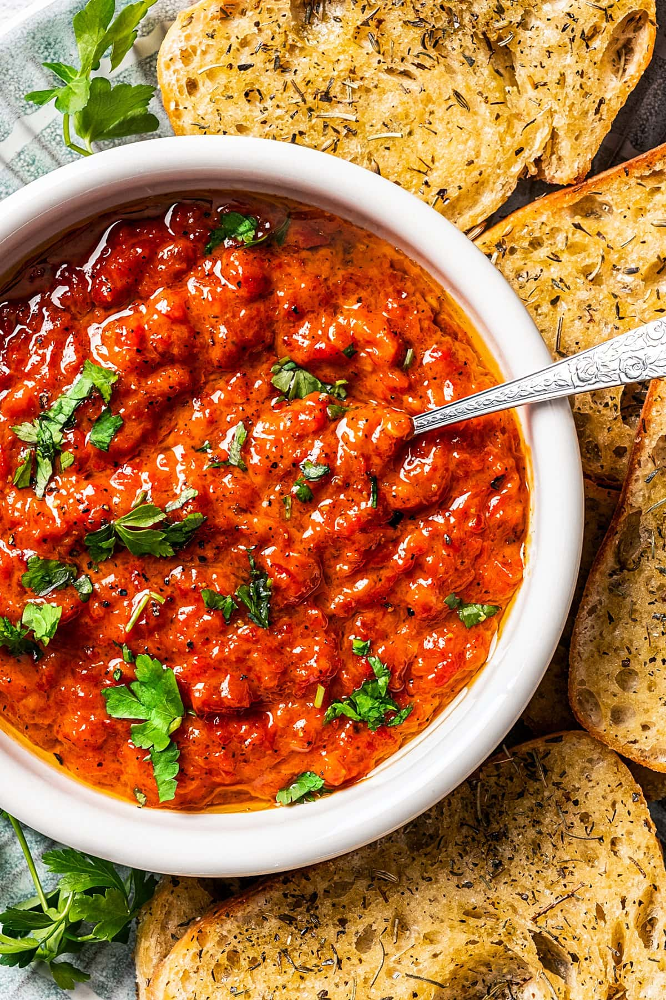

Ajvar:

But what is Ajvar?
Ajvar is a bright red pepper relish that's traditionally from Macedonia, though loads of variations exist throughout the Balkans. Ajvar translates to "caviar" or as i like to call it, the poor mans caviar, and its commonly used as a topping for bread with a sweet tangy slightly smoked flavor thats irresistable.
Every grandma and mama has their own recipe and way of making it, though one ingredient is certain: roasted red peppers. Other Ajvar recipes may include eggplant, garlic, green peppers,etc. But i love the Macedonian version the most. It's very simple because all you need is red bell peppers, salt, pepper, and sunflower oil.
Simple Ingredients to make this delicious recipe
Although it is so so delicious, it generally requires very vew ingredients, you get why i said it's the poor mans cavier earlier?
All you need is:
-
Red bell peppers
-
Salt
-
Peppers
-
Sunflower oil
How to make the Ajvar!
-
Prep the ingredients
While the oven gets nice and hot, give your peppers a rinse. Once dried, prick them all over with a fork. This allows the steam to escape while they roast.
-
Roast the peppers
Roast the peppers, turning them every so often so that they blacken evenly. It’s important to note that while they roast, the heat also caramelizes some of the natural sugars bringing out the sweetness in the pepper.
Afterward, seal the roasted peppers in a plastic bag, and leave them to soften in the steam.
The skins should come off easily. Once you’ve peeled and deseeded the peppers, add them to a mesh bag, and let them drain overnight. Then transfer them to a food processor and pulse until they reach a consistency similar to chutney.
-
Cook
Next, you’ll add the pureed red peppers to a pot, along with olive oil, salt, and pepper. Slowly cook the relish for 2 to 3 hours, stirring often. Once it’s ready, season your Ajvar to taste, and then take it off the heat to cool for a bit.
Home